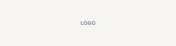

<!-- POURQUOI NOUS CHOISIR (TurnedYellow) — leur fond #E9BA3B est notre --soleil -->
  <section class="section atouts-sec">
    <div class="enveloppe">
      <div class="chapeau">
        <span class="surtitre">Pourquoi nous</span>
        <h2>Ce qui fait la <span class="accent" style="color: var(--encre);">différence</span></h2>
        <p>Chaque portrait est dessiné à la main par un illustrateur. Le cadeau qui fait rire toute la famille.</p>
      </div>
      <div class="atouts-grille">
        <article class="atout-carte">
          <div class="atout-carte__num">01</div>
          
          <h3>Aperçu rapide</h3>
          <p>Ton premier aperçu arrive sous 48 h. Dès que tu valides, le fichier haute définition part par e-mail.</p>
        </article>
        <article class="atout-carte">
          <div class="atout-carte__num">02</div>
          
          <h3>Retouches illimitées</h3>
          <p>On ajuste jusqu'à ce que ce soit parfait. Seuls les ajouts importants (personne, animal) sont facturés.</p>
        </article>
        <article class="atout-carte">
          <div class="atout-carte__num">03</div>
          
          <h3>N'importe quelle photo</h3>
          <p>Seul, en couple, en famille, entre collègues ou avec ton animal. Plusieurs photos sont les bienvenues.</p>
        </article>
        <article class="atout-carte">
          <div class="atout-carte__num">04</div>
          
          <h3>Paiement sécurisé</h3>
          <p>Transactions chiffrées et commande fluide, du fichier numérique à l'impression encadrée.</p>
        </article>
      </div>
      <div class="preuve-ligne">
        
        <p><strong>80 000+</strong> personnes déjà transformées en dessin animé</p>
      </div>
      <div style="text-align:center; margin-top: 30px;">
        <a class="bouton bouton--clair" href="#styles">Créer mon portrait →</a>
      </div>
    </div>
  </section>
